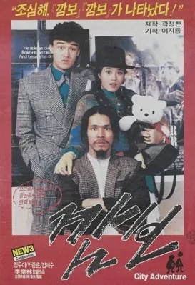
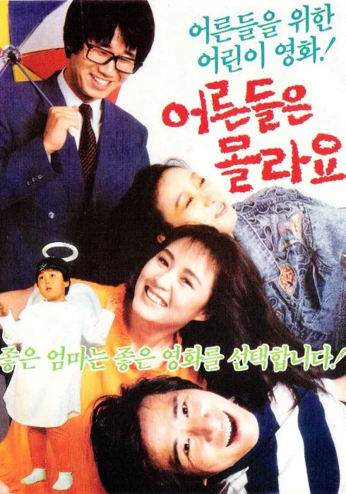
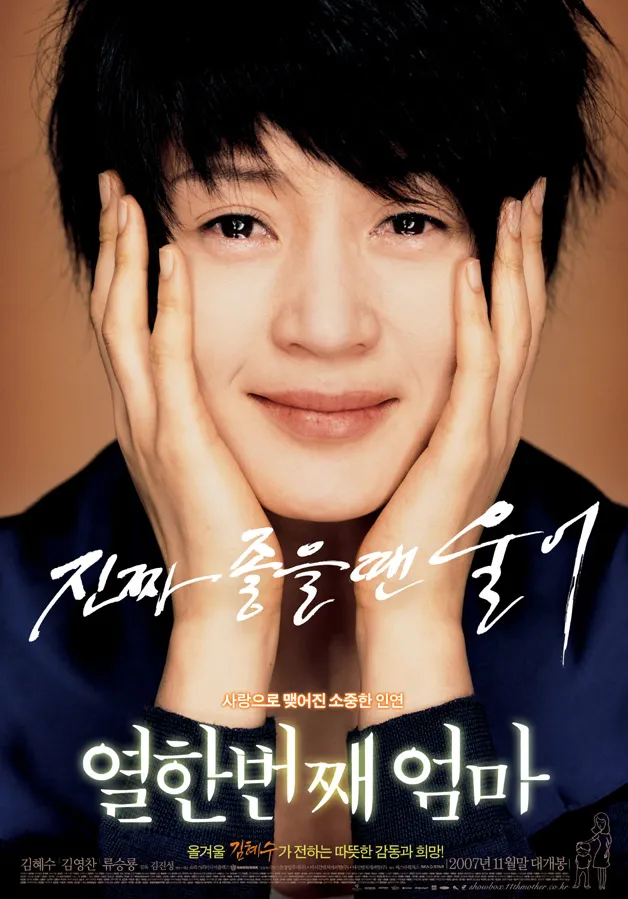
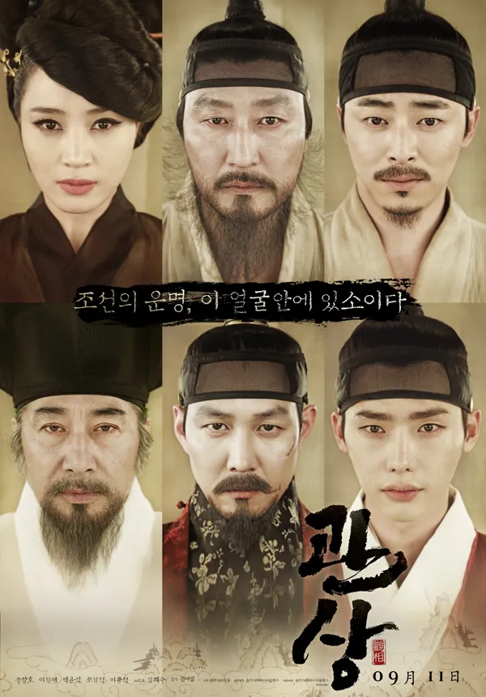
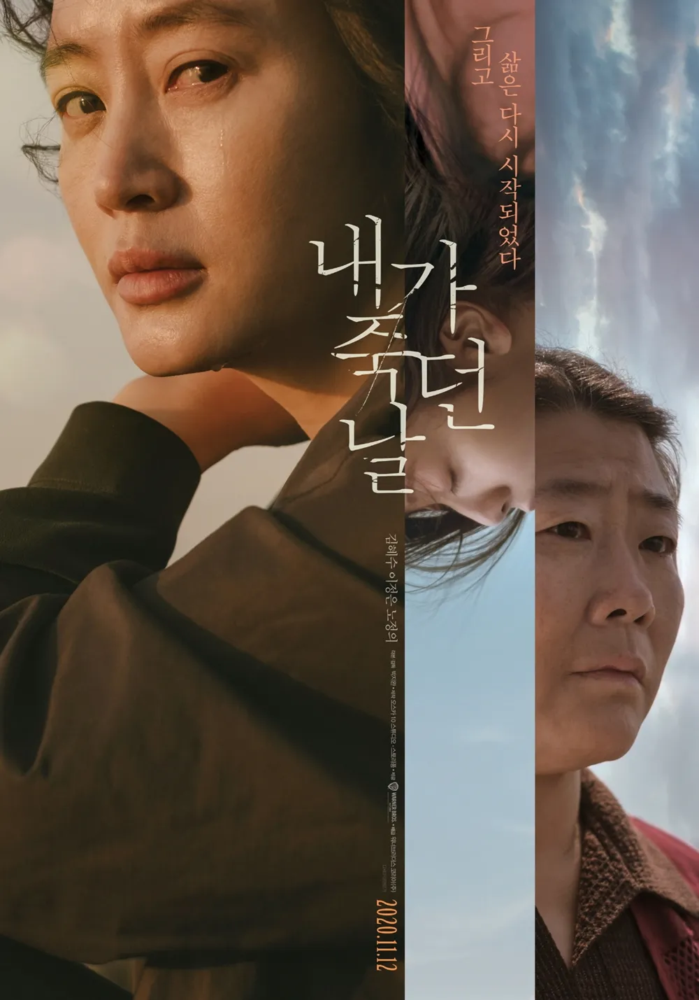
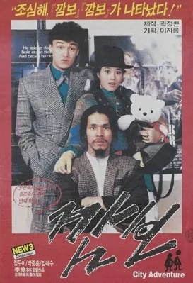

| 김혜수 金憓秀 | Hyesoo Kim |
|
|---|---|
| 출생 | 1970년 9월 5일(53세) |
| (정부 직할) 부산시 동래구 (現 부산광역시 동래구) |
|
| 국적 |  대한민국 대한민국 |
| 본관 | 경주 김씨 (慶州 金氏) |
| 신체 | 170cm, A형 |
| 가족 | 아버지, 어머니 김현숙 언니 김혜성, 남동생 김동훈, 김동현, 김동희 |
| 학력 |
서울미동국민학교 (졸업) 덕성여자중학교 (졸업) 배화여자고등학교 (졸업) 동국대학교 예술대학 (연극학부 89 / 학사) 성균관대학교 일반대학원 (문화콘텐츠학 / 석사) |
| 종교 | 불교 |
| 소속사 | 호두앤유엔터테인먼트 |
| 데뷔 | 1985년 CF 《마일로》 |
| 링크 |  |
| 서명 | |
1. 개요
[편집]-
대한민국의 배우. 1986년 영화 깜보로 데뷔했으며, 비주얼, 연기력이 출중하고 예능감도 좋은 데다 팜므 파탈 캐릭터부터 진지하고 심각한 정극 연기, 무서운 악역, 능청스럽게 망가지는 개그 캐릭터까지 모두 소화할 수 있는 배우이다. 3대 영화상 주연상 5회, 3사 연기대상 3회, 백상 TV부문 최우수연기상을 2회 수상했다.
2.1.유년기
-
1970년 부산에서 태어났으며, 초등학교 3학년 때까지 부산에서 학교를 다니다가 무역업을 하는 아버지의 일 때문에 서울로 이사하며 미동초등학교로 전학을 갔다. 그 시절 단짝친구와는 사후세계, 우주인, 마의 삼각지대 등이 공통 관심사였다고 한다. 공원 잔디밭에 단짝친구와 나란히 누워 별자리를 그리고 며칠 뒤 뭐가 변했나 왜 변했나 따지고 놀만큼 호기심도 많았다고 한다.
뭐든 빨리 배우고 싶은 그 호기심에 초등학생 시절에 무려 학원 6개를 다녔다고 한다. 미동초등학교(당시이름은 국민학교) 시절 국가대표 태권도 어린이 시범단 소속이었는데, 정원 20명 남짓에 성적도 평균 90점 이하로 떨어지면 제명당할 만큼 엄한 곳이었다고 한다. 당시 시범단들은 디자이너한테 맞춘 유니폼을 입고, 머리카락도 미장원 가서 똑같이 동그랗게 자르고 다녔는데 자신 또한 그 유니폼을 입고 사범님 앞에서 “태권!” 거수경례가 그렇게 하고 싶었다고 한다. 그런 동기로 입단한 애는 본인 하나뿐일 거라고. 여자아이는 당시 김혜수 하나였는데 엄마가 눈에 잘 띄라고 머리에 큼직한 꽃까지 달아줬다고 한다. 1988 서울 올림픽 유치 전, 안토니오 사마란치 IOC 위원장이 방한했을 때 화동(花童) 역할도 했다. 드라마 하이에나 정금자 역할로 만든 인스타에 사진이 있다.
2.2.1985년 ~ 2008년
-
어린 시절부터 태권도를 배운 유단자였는데 광고 속에 나오는 태권도 장면에 어울리는 여자를 찾던 CF 감독에 의해 발탁, 1985년 16세 나이로 초콜릿 음료인 네슬레(당시 한서식품) 마일로광고에 태권소녀로 출연하며 연예계에 첫 발을 들였다. 그리고 광고에 출연한 모습을 본 이황림 감독에 의해 영화 《깜보》의 주연으로 극중 박중훈의 상대역인 밤무대 가수 '나영'을 맡아 연기자로 전격 데뷔했다[8].
어린 시절 사진을 보면 감독들이 어린 나이였던 김혜수를 탐낸 이유를 알만하다. 이황림 감독은 당시 김혜수를 캐스팅하기 위해 시나리오 일부를 바꿨다고 할 정도. 보통 저 나이 또래면 성인 연기 이전에 하이틴 배역을 먼저 맡기 마련인데 김혜수의 경우 16살 나이로 데뷔하자마자 10대 연기를 넘어서 바로 성인 연기를 맡았으며 이런 예는 별로 없다.
이 당시 이색 경력이 있다면 데뷔하자마자 뮤직비디오를 촬영했다는 것인데, 이 경력이 회자되는 이유는 한국 가요 역사상 최초의 뮤직비디오였기 때문이다. 더욱 경악할 만한 사실은 그 뮤직비디오의 노래가 다른 누구도 아닌 가왕 조용필의 '허공'이라는 것이다.
신인 시절 가수로 활동한 전력이 있다. 1988년 그녀의 신인시절에 출연한 《어른들은 몰라요》 OST에서 <아름다운 세상>이라는 곡을 불렀다. 음원은 벅스, 멜론에서 들을 수 있다. 《직장의 신》, 《모던보이》 OST에 참여하기도 했다.
《깜보》로 데뷔한 이후 《사모곡》, 《세노야》, 《순심이》 같은 드라마에서 주연을 맡았다. 《세노야》에선 동시기 이미 베테랑으로 인정받던 이혜숙과 극중 자매로서 연기로 맞짱을 뜨고 갓 스물이 된 나이에 《꽃 피고 새 울면》에서 극중 상대역 노주현과 나이차가 무려 26살이나 되는데도 부부로 출연하는 등 겨우 20대 초반 나이에 당대의 출중한 연기자들과 연기하면서 그 또래라고는 믿겨지지 않는 깊이 있는 연기와 더불어 청순가련함을 화면에 드러냈고 이를 통해 작품의 인기를 보장하는 특급 스타로 자리매김했다.충남 청양산골이 고향인 '순심이'가 서울로 가려다 아버지(김인문)에게 사정없이 맞는 장면을 녹화하는 날이었다. 김혜수가 조심스럽게 말문을 열었다. "운 감독님, 제가 아버지에게 진짜로 맞아야 감정도 살고 이 씬이 성공할 수 있을 것 같아요". 아버지(김인문)도 역시 같은 의견이었다. 이 씬을 녹화하는 동안 숨이 멎는 것 같았다. 아버지에게 맞는 순심이(김혜수)가 크게 다칠 것 같은 공포감에서 서둘러 컷을 외쳤다. 씬의 리얼리티(사실감)는 단연 최고였다. 두 배우에게 절로 고개가 숙여졌다. 이 시절에 하도 스케줄이 많으니 김혜수 측에서는 역을 고사하려 했는데 캐스팅하는 사람들이 제발 맡아달라고 집 앞에서 진을 치고 통사정을 해대는 바람에 어쩔 수 없이 역을 맡은 적도 부지기수라고 할 정도였다.
영화 쪽에서도 마찬가지. 1991년, 20대 초반에 출연한 《잃어버린 너》 등의 영화에서 청순가련한 모습을 이어간다. 특히 이명세 감독의 영화 《첫사랑》에서 첫사랑의 대명사로 자리 잡으며 최연소 청룡 여우주연상을 수상하기도 하였다. 하지만 김혜수 자신에게는 이런 청순가련한 이미지로의 고착이 큰 부담이었는지 이후 연기 변신을 모색하게 되고 그런 과정에서 《한지붕 세가족》에 출연, 몸매 드러나는 복장을 즐기는 젊은 미시족 역을 맡았는데 그제서야 사람들은 김혜수가 글래머라는 것을 알게 되었다. 이후 김혜수의 몸매는 엄청난 화제를 불렀고 김혜수 본인도 섹시한 스타일로 이미지 변신에 완벽히 성공한다. 그녀는 위와 같이 80년대 중후반 하이틴 스타에서 1990년대로 넘어가자 텔레비전의 드라마, 영화뿐 아니라 진행자[12]로도 활동하는 등 다방면에서 기존 인기를 이어가 많은 사랑을 받았다.
MBC 일요아침드라마 《짝》으로 27세의 나이에 첫 연기대상을 수상하고 복수혈전, 국희[13]등 높은 시청률의 인기극의 주연을 맡는 등 탤런트로서는 잘 나갔다.[14] 하지만 문제는 91년 《잃어버린 너》 등을 제외하곤 출연하는 영화들의 성적이 신통치 않았다는 건데, 한석규의 충무로 진출작이자 함께 출연한 《닥터봉》이 흥행에 성공하고 청룡영화제 여우주연상을 수상하면서 비로소 흥행배우가 된다. 그러나 이후에도 출연한 영화들은 안재욱과 출연한 《찜》을 제외하고[17] 하나같이 흥행에서 실패를 하게 된다. 하지만 2000년대에 들어 차승원, 이성재, 송강호라는 남자배우들을 돕는 여주급 조연으로 출연한 《신라의 달밤》, 《YMCA 야구단》이 흥행에서 성공하면서 비로소 본인 이름으로 주연을 맡은 영화에 출연하고 《분홍신》과 《얼굴 없는 미녀》가 작품성에서 호평받으며 영화계에서 겨우 자기 자리를 잡게 된다. 《얼굴 없는 미녀》로 백상예술대상 최우수연기상과 대종상 여우주연상을 동시에 수상하기도 하였다. 아이러니하게도 2000년대 이후론 섹시한 이미지가 고착되어 오히려 짐이 되고 있는 듯한 모습도 보이니 젊을 때나 나이 들어서나 고정 이미지로 인해 고생하고 있다.
2000년대 초중반엔 그녀도 30대의 나이에 접어들며 신세대들의 급부상의 세대교체에 따라 최진실•채시라•하희라 등의 같은 기존 30대 톱스타들처럼 자연스레 슬럼프를 겪기도 했다. 2002년 KBS가 100부작으로 기획한 장희빈에 출연하기 위해 영화 바람난 가족 출연을 고사하며 영화사와 갈등을 겪었고, 장희빈 내부에서도 작가 교체 등 여러가지 문제와 함께 시청률 역시 저조한 성적을 거둬 조기종영설이 나돌기도 했다. 그러나, 그녀는 방영기간 내내 작품의 중심을 잘 이끌어 약 1년 동안 100부작을 모두 내보낼 수 있었고, 최종회 시청률도 30%를 넘겨 유종의 미를 거둬 그해 연기대상에서 다른 인기작의 유력 후보들을 제치고 대상을 수상했다. 이후 출연한 2004년 영화 《얼굴 없는 미녀》도 흥행성적은 부진했고 그해 연말부터 방영된 MBC 주말극 한강수타령 역시 KBS 부모님 전상서에 밀리는 성적을 거뒀다.
영화 <타짜> 그러다 2006년 지금까지도 회자되는 정마담 역으로 출연한 《타짜》가 684만 명의 관객수를 동원하며 대 흥행하고 청룡영화상 여우주연상과 인기스타상 2관왕을 차지하면서 제2의 전성기를 달리게 된다. 이 영화를 계기로 김혜수는 그 후 작품들에서 자신만의 영역을 구축하며 '김혜수가 아니면 상상할 수 없는 역할'들을 맡아나가기 시작한다.
1994년 대한뉴스에도 뜬적이 있다.# 0:31초부터
2.3. 2009년 ~ 2019년
-
2009년에는 드라마 《스타일》에 출연. "엣지 있게!" 라는 유행어를 구사해 대중들에게 널리 알렸다. 그러나 정작 그 계통에서는 잘 쓰지 않는 말이라고. 심지어 다른 계통의 사람이 썼다. 이 드라마에서 카리스마 넘치는 워커홀릭인 패션지 편집장 박기자 역을 맡아 극 전체에서 가장 큰 존재감과 포스를 보여주었다.
2012년엔 《타짜》에서 호흡을 맞춘 최동훈 감독의 《도둑들》에 출연해 1,298만 관객을 동원하는 대히트를 치면서 당당히 1,000만 배우의 타이틀을 획득하게 된다. 이 영화에서는 금고털이 전문도둑 펩시를 연기했다.
2013년 가을에 개봉한 한재림 감독의 영화 《관상》도 913만 관객을 동원하며 대히트를 기록했다. 이 영화에서 김혜수는 매혹적인 기생 연홍을 연기해 적은 분량에도 불구하고 큰 임팩트를 보여주었다.

드라마 <직장의 신> 2013년 3년 만에 드라마 《직장의 신》에서 만능 계약직 미스 김 역으로 안방극장에 복귀. 그동안의 이미지를 내던진 넘사벽급 코믹 연기로 호평을 받았다. 또한 이 작품에서의 미스 김은 코믹적인 부분만 아니라 다양한 간극의 캐릭터를 가지고 있는데 김혜수는 이러한 입체감 또한 완벽히 표현해내며 연기력을 증명하였다. 그리고 이 작품으로 10년 만에 다시 KBS 연기대상에서 대상을 수상했다. 이 때의 옷차림이 다른 의미로 대단했는데, 이전의 화려한 시상식 드레스가 아닌 숏컷+정장 그리고 망토로 직장의 신에서 '미스 김'으로 입었던 그 패션이었다. 연기자로서의 자세를 잘 알 수 있는 부분이며 깔끔하면서도 의미있는 수상소감 또한 호평을 받았다.
2015년에 개봉한 영화 《차이나타운》에서는 인천 차이나타운 조직의 보스인 엄마(마우희)역을 연기했다. 이 영화는 손익분기점을 돌파하며 김혜수의 힘을 보여주었을 뿐만 아니라, 황금촬영상 여우주연상, 한국영화평론가협회상 여우주연상, 한국영화제작가협회상 여우주연상, 춘사영화상 여우주연상을 김혜수에게 안겨주었다. 영화 자체로는 아쉬운 점도 많다는 평을 듣지만, 적어도 김혜수의 영화 커리어에는 확실히 플러스가 된 작품이었다는 건 분명하다.
2016년에 개봉한 코미디영화 《굿바이 싱글》에 철없는 톱스타 고주연 역으로 출연했다. 영화는 200만 명이 넘는 관객수를 기록, 손익분기점을 넘기며 영화계에 보기 드문 여배우 원톱 흥행작을 만들어냈고, 여배우 원톱 흥행작의 발전과 증가에 많은 영향을 미쳤다.
2016년 tvN 10주년 특별기획드라마 《시그널》에 베테랑 형사 차수현 역으로 출연하며 다시 3년만에 드라마로 복귀했다.[21] 작품성 때문에 출연했다고 할 정도로 스토리가 탄탄한 편이고 시청률도 준수해 연기 인생에 커리어 하나 또 쌓았다는 분위기. 참고로 김혜수는 당시 만 46세에 중년의 형사팀장과 아가씨인 젊은 시절 연기를 둘 다 소화한다. 한동안 작품에서 잘 보여주지 않았던 풋풋하고 어리버리한 연기도 젊은 시절역에서 잘 표현해내며 김혜수의 연기폭이 넓다는 걸 제대로 보여줬다는 평이 많았다. 김혜수는 이 작품으로 20년만에 다시 백상예술대상 TV부문 여자 최우수 연기상을 수상하였다. 또한, 백상에 뒤이어 tvN의 10주년 기념 시상식인 tvN10 어워즈에서도 이 작품으로 여자 배우상을 수상하였다.
2017년 11월 영화 《미옥》에 출연했다. 여성 느와르물이라고 대대적으로 알렸으나, 느와르물은 온데간데없고 자극적인 장면, 진부한 스토리 콤보로 혹평만 쏟아졌다. 최종 관객수 23만 명으로 막을 내렸지만 꾸준히 여성 중심 작품에 출연하는 모습을 보여줬다.
2018년에는 유아인, 조우진과 함께 1997년의 IMF 외환위기 상황을 다룬 경제 스릴러 영화 《국가부도의 날》에 출연했다. 이 영화는 경제학적으로 다소 아쉽다는 평가가 있지만 평단과 대중의 고른 호평을 받아 350만 명의 관객을 모으며 흥행에 성공했다. 김혜수 특유의 지적인 카리스마가 녹아든 연기는 이견이 없는 호평이다. 특히 뱅상 카셀이 분한 IMF 총재와의 협상 장면에서는 영어를 구사하는데, 경제 용어가 잔뜩 들어간 다량의 고난도 대사를 매우 잘 소화해 한 치의 물러섬 없는 팽팽한 긴장감을 자아냈다.
2.4.2020년 ~
2020년 2월 SBS 드라마 하이에나에서 변호사 정금자로 출연했다. 성공을 위해 물불 가리지 않는 하이에나 같은 역할로 한국 드라마에서 보기 힘든 강하면서 입체적인 여성캐릭터를 연기하였다. 드라마 속 정금자의 헤어, 의상, 악세서리는 평범함에서 벗어나 주목을 받았다. 또한 드라마 홍보를 위해 김혜수는 캐릭터의 인스타그램을 개설하여 직접 운영하였다.(이후 본인 계정으로 전환하여 활용 중이다.) 마지막회에 자체 최고 시청률 14.6%를 기록하였으며 시청자들이 시즌제를 염원하기도 하였다.
11월 개봉한 영화 내가 죽던 날에서 형사 김현수 역으로 열연했다. 김혜수는 시나리오를 받았을 때 절망에 빠졌지만 삶을 포기하지 않기 위해 힘쓰는 현수의 스토리가 본인과 닮은 느낌을 받아 작품을 선택했다고 하였다. 개인사로 힘들었던 순간을 영화에 녹이며 위로받을 수 있던 운명 같은 작품이라고 말했다. 잔잔하지만 묵직한 위로를 주는 좋은 영화, 몰입감 있는 김혜수의 연기가 돋보였다는 평을 받았다.
국내에서 심각한 문제로 꾸준히 거론되어 왔던 촉법소년 문제를 정면으로 다룬 넷플릭스 오리지널 드라마 소년심판에 캐스팅 되었다. 극중 모종의 이유로 소년범을 꺼리다못해 혐오하는 소년부 엘리트 판사 심은석을 연기한다. 겉으로는 근엄하고 냉철하게만 보이면서도, 진심을 담아 소년범에 대한 문제를 제기하는 심은석 그 자체가 되어 작중 수많은 명대사, 명장면들을 남기며 왜 그녀가 명배우인지를 다시 한 번 각인시킨 작품이 되었다. 2022년 8월 소년심판2 제작이 확정되었으나 2023년 1월 시즌2 제작이 프리프로덕션 과정에서 무산되었다는 기사가 떴다. 넷플릭스 측은 결정된 바가 없다고.
2022년 10월 tvN 드라마 슈룹에서 중전 임화령으로 출연했다. 사고뭉치 왕자들을 자식으로 둔 어머니 역할을 연기하였는데, 기존 사극에서는 볼수 없었던 적극적이고 활동적인 중전 캐릭터가 신박하다는 평이 많았다. 역시 김혜수다운 카리스마와 명석한 두뇌를 겸비한 모습과 더불어 애틋한 모성애까지 보여주며 많은 이들의 심금을 울렸다. 사실상 본인이 드라마 전체를 이끌고 나가며 최종회 자체 최고 시청률 16.9%로 막을 내렸다.
2021년 촬영을 끝낸 류승완 감독의 밀수가 2023년 7월 26일 개봉했다. 열네 살에 식모살이를 시작해 돈이 되고 자신의 몸을 지킬 수 있는 것이라면 무엇이든 하는 인물인 조춘자역을 맡았으며, 일련의 사건들로 인해 정착했던 군천을 떠났다가 돌아와 밀수 판을 벌이는 캐릭터이다. 생존을 위해 더욱 오버스럽게 행동하는 춘자의 모습을 생각하며 연기했다고 하며, 과하다는 평도 있지만 진숙과 대면할 때 드러나는 모습 등 전체적으로 춘자라는 인물의 특성을 잘 드러내었다. 스토리와 연기 모두 대체로 호평이 많고, 영화는 514만 관객수로 2023년 여름 텐트폴 한국영화 중 가장 좋은 성적을 거두며 흥행에 성공했다
2023년 6월 15일 국내 최초로 방송사 탐사보도국을 배경을 소재로 한 리얼 오피스 드라마 '트리거(가제)'에서 정의감 만렙의 뼛속 깊이 본투비 팀장 역으로 출연을 확정했다는 기사가 떴다.
3.1.영화
-
-

깜보
주연 1986.3.11
이황림 감독 / 나영 역
-
수렁에서 건진 내 딸 2
주연 1995.5.13
김호선 감독 / 유리 역
-
그 마지막 겨울
주연 1988.2.18
정소영 감독 / 영애 역
-

어른들은 몰라요
주연 1988.7.1
이규형 감독 / 유라 역
-
오세암
주연 1990.3.24
박철수 감독 / 안젤라 수녀 역
-
잃어버린 너
주연 1991.7.13
원정수 감독 / 김윤희 역
-
첫사랑
주연 1993.1.22
이명세 감독 / 영신 역
-
블루시걸
주연 1994. 11. 5
오중일 감독 / 채린 역
-
영원한 제국
조연 1995.1.25
박종원 감독 / 윤상아 수녀 역
-
남자는 괴로워
주연 1995.2.11
이명세 감독 / 김혜수 역
-
닥터봉
주연 1995.4.29
이광훈 감독 / 황여진 역
-
미스터 콘돔
주연 1997.3.1
양윤호 감독 / 성희 역
-
찜
주연 1998.5.16
한지승 감독 / 채영 역
-
투 타이어드 투 다이
주연 1998.11.28
진원석 감독 / 아누크 역
-
-
닥터 K
주연 1999.1.6
곽경택 감독 / 표지수 역
-
신라의 달밤
주연 2001.6.23
김상진 감독 / 민주란 역
-
YMCA 야구단
주연 2002.10.3
김현석 감독 / 민정림 역
-
얼굴 없는 미녀
주연 2004.8.6
김인식 감독 / 지수 역
-

분홍신
주연 2005.6.30
김용균 감독 / 선재 역
-
타짜
주연 2006.9.28
최동훈 감독 / 정마담 역
-
바람 피기 좋은 날
주연 2007.2.8
장문일 감독 / 이슬 역
-
좋지 아니한가
주연 2007.3.1
정윤철 감독 / 오미경 역
-

열한번째 엄마
주연 2007.11.29
김진성 감독 / 여자 역
-
모던 보이
주연 2008.10.2
정지우 감독 / 조난실 역
-
이층의 악당
주연 2010.11.24
손재곤 감독 / 연주 역
-

도둑들
주연 2012.7.25
최동훈 감독 / 팹시 역
-
-

관상
주연 2013.9.11
한재림 감독 / 연홍 역
-

차이나타운
주연 2015.4.29
한준희 감독 / 엄마 역
-
-
굿바이 싱글
주연 2016.6.29
김태곤 감독 / 주연 역
-
미옥
주연 2017.11.9
이안규 감독 / 나현정 역
-
국가부도의 날
주연 2018.11.28
최국희 감독 / 한시현 역
-

내가 죽던 날
주연 2020.11.12
박지완 감독 / 현수 역
-

밀수
주연 2023.7.26
류승완 감독 / 조춘자 역
-

| 연도 | 제목 | 배역 | 활동 | 관객수(명) |
|---|---|---|---|---|
| 1986년 | 깜보 | 나영 | 주연 | 16,244 |
| 수렁에서 건진 내 딸 2 | 유리 | 18,650 | ||
| 1988년 | 그 마지막 겨울 | 영애 | 39,401 | |
| 어른들은 몰라요 | 유라 | 220,591 | ||
| 1990년 | 오세암 | 안젤라 수녀 | 12,433 | |
| 1991년 | 잃어버린 너 | 김윤희 | 179,859 | |
| 1993년 | 첫사랑 | 박영신 | 5,856 | |
| 1994년 | 나는 소망한다 내게 금지된 것을 | 특별출연 | ||
| 연애는 프로, 결혼은 아마추어 | 7,704 | |||
| 블루시걸 | 채린 | 주연 (목소리) | 202,751 | |
| 1995년 | 영원한 제국 | 윤상아 | 조연 | 46,767 |
| 남자는 괴로워 | 김혜수 | 주연 | 53,618 | |
| 닥터 봉 | 황여진 | 376,443 | ||
| 헐리우드 키드의 생애 | 특별출연 | - | ||
| 1997년 | 체인지 | 노처녀 | 167,235 | |
| 미스터 콘돔 | 성희 | 주연 | 157,032 | |
| 1998년 | 찜 | 채영 | 168,813 | |
| 투 타이어드 투 다이 | 아누크 | 1,008 | ||
| 닥터 K | 표지수 | 30,843 | ||
| 2001년 | 신라의 달밤 | 민주란 | 4,800,000 | |
| 2002년 | 쓰리 | 성민 아내 | 69,778 | |
| YMCA 야구단 | 민정림 | 1,480,000 | ||
| 2004년 | 얼굴 없는 미녀 | 지수 | 346,015 | |
| 2005년 | 분홍신 | 선재 | 1,371,122 | |
| 2006년 | 타짜 | 정마담 | 6,847,777 | |
| 2007년 | 바람 피기 좋은 날 | 이슬 | 1,847,875 | |
| 좋지 아니한가 | 오미경 | 321,654 | ||
| 열한번째 엄마 | 여자 | 350,204 | ||
| 2008년 | 모던보이 | 조난실 | 758,473 | |
| 용서, 그 먼 길 끝에 당신이 있습니까 | 내레이션 | 795 | ||
| 2010년 | 이층의 악당 | 연주 | 주연 | 605,224 |
| 2012년 | 도둑들 | 팹시 | 12,983,330 | |
| 2013년 | 관상 | 연홍 | 9,134,586 | |
| 2015년 | 차이나타운 | 엄마 | 1,472,006 | |
| 2016년 | 굿바이 싱글 | 고주연 | 2,108,273 | |
| 2017년 | 미옥 | 나현정 | 238,662 | |
| 2018년 | 국가부도의 날 | 한시현 | 3,752,152 | |
| 2020년 | 내가죽던 날 | 김현수 | 234,522 | |
| 2023년 | 밀수 | 조춘자 | 5,143,005 | |
| 총 관객수 | 50,200,677명 | |||
| 평균 관객수 | 1,476,490명 | |||
여배우 누적 관객수 5위,[49] 주연작 누적 관객수로는 1등이다.